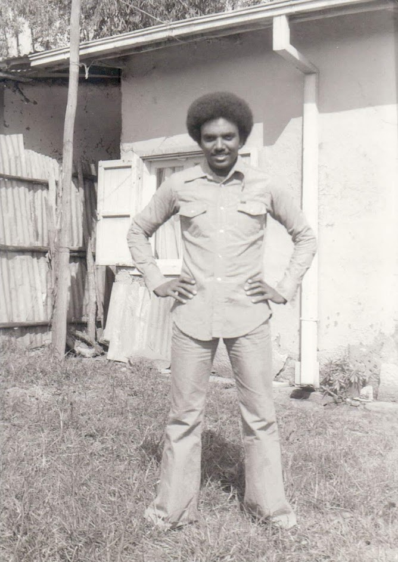

TIMELINE
September 7, 1950
Mebrahtu Bekuretsion was born in Asmara, Eritrea to Bekuretsion Tesfay and Zewdi Tesfalidet
1969
Mebrahtu is applied to Addis Ababa University
1973
Mebrahtu graduates from Addis Ababa University with a Business Degree
Early 1980's
Mebrahtu works for the United Nations Economic Commision of Africa in Addis Ababa
1984
Mebrahtu moves to Vienna to work for the UN Atomic Energy
Early 1990s
Mebrahtu works in Several UN missions in Central America, Namibia, Somalia, and Cambodia
June 29, 1996
Mebrahtu Bekuretsion marries Aster Tesfay
Sept 30, 1997
Mebrahtu and Aster welcomes their first son, Amman Mebrahtu in Nairobi, Kenya
December 9, 1998
Mebrahtu and Aster welcomes their second son, Abel Mebrahtu in Asmara, Eritrea
Early 2000s
Mebrahtu works for the UN Habitat in Erbil, Iraq
2004-2005
Mebrahtu, Aster, and their children move to Kenya and later to Uganda
July 26, 2005
Mebrahtu and Aster welcomes their first daughter, Melat Mebrahtu in Kampala, Uganda
2007
Mebrahtu, Aster and their children move to the United States of America and settle in Charlotte, North Carolina
2011
Mebrahtu opens up his first store in Monroe, North Carolina called "Mebs Mart"
2012
Mebrahtu, Aster and his family gains American Citizenship
November 14, 2017
Mebrahtu Bekuretsion passes away at age 67 in Charlotte, North Carolina
| IN A NUTSHELL  | |
|---|---|
| Born | Mebrahtu Bekuretstion September 7, 1950 Asmara, Eritrea |
| Died |
November 14, 2017 (aged 67) Charlotte, North Carolina. |
| Occupation | Worked for the United Nations Accountant Manager of Mebs Mart |
| Parents |
Bekuretsion Tesfay
(Father) Zewdi Tesfalidet (Mother) |
| Children |
Amman Mebrahtu (b. 1997) Abel Mebrahtu (b. 1998) Melat Mebrahtu (b. 2005) |
| Cause of death |
Pancreatic cancer |